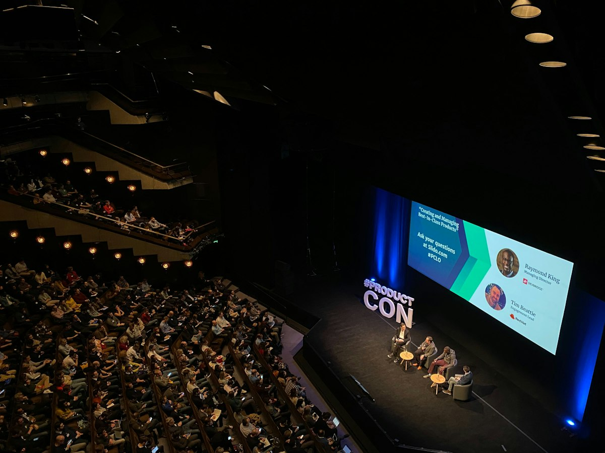
Sponsorships & awards
Industry sponsorship for workshops and challenges, including winner awards that recognize outstanding student research.
AIX hosts AI events and supports workshops that connect researchers, students and industry practitioners — driving collaboration, open communication and the next generation of AI talent.
Workshops & communities we've supported
We partner with conferences, workshops and research communities to create the moments where meaningful connections happen — on stage, at the dinner table and over lunch.

Industry sponsorship for workshops and challenges, including winner awards that recognize outstanding student research.
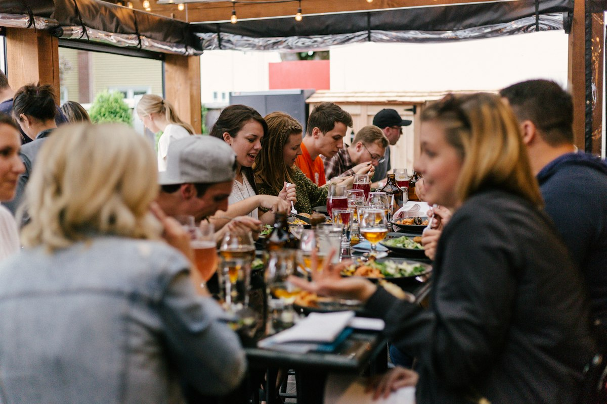
Intimate dinners where invited speakers, faculty and organizers continue the conversation beyond the program.

Lunch receptions, social hours and community dinners that bring students, researchers and practitioners together.
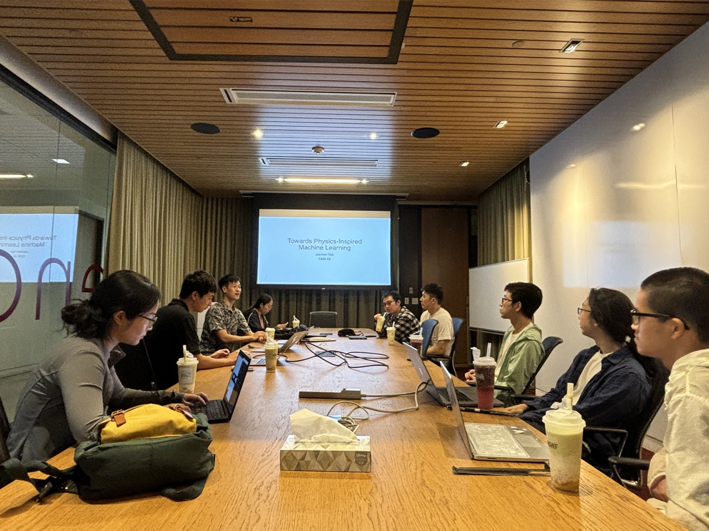
Regular lunch talks at Caltech and UCLA where early-career researchers share their latest work.
The workshops and symposia AIX has supported have brought together invited speakers and organizers from Stanford, UT Austin, UIUC, UCLA, NYU, Northwestern and beyond.
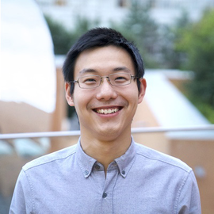
Jiajun WuStanford University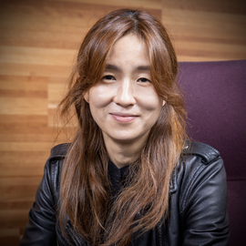
Yejin ChoiStanford · NVIDIA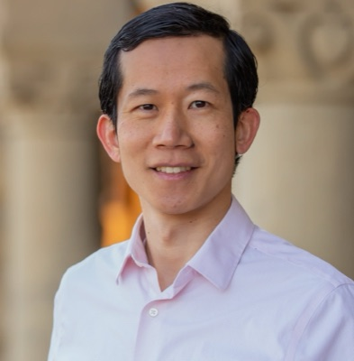
Percy LiangStanford University Kristen GraumanUT Austin
Kristen GraumanUT Austin
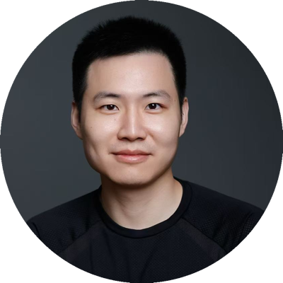
Xudong WangPhysical Intelligence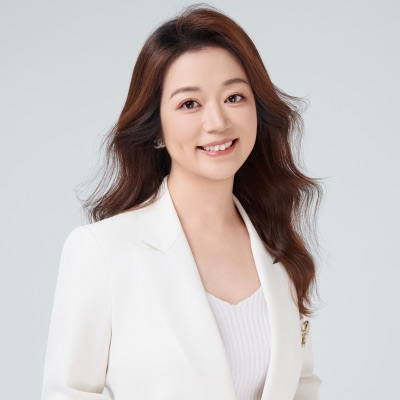
Heng JiUIUC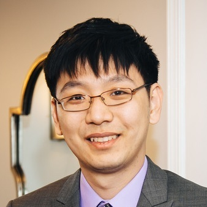
Kai-Wei ChangUCLA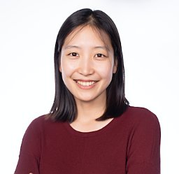
Eunsol ChoiNYU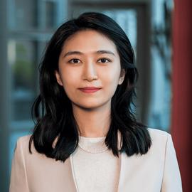
Manling LiNorthwestern UniversityRoles refer to the respective workshops, as listed on their official websites.
Since 2024, AIX has partnered with leading AI workshops and research communities across computer vision, embodied AI and NLP.
Foundation Models Meet Embodied Agents — CVPR 2026 Workshop
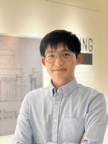
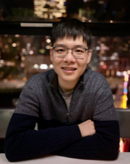
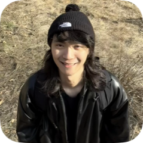
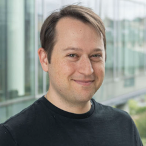
Invited speakersKristen Grauman, Wei-Chiu Ma, Xudong Wang, Kaichun Mo, An-Chieh Cheng
Steering committeeLi Fei-Fei, Jiajun Wu, Yejin Choi, Yonatan Bisk
Embodied Agent Interface Challenge — NeurIPS 2025 Competition Track
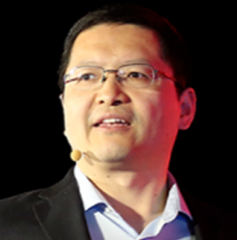
Organizers includeLi Fei-Fei, Jiajun Wu, Yejin Choi, Percy Liang, Manling Li, Li Erran Li
Texas NLP Symposium 2026
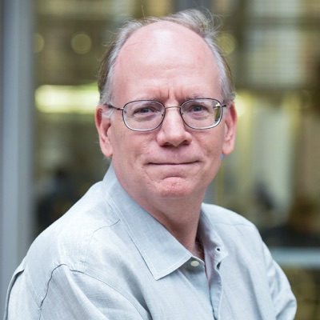
Invited speakersRaymond Mooney (UT Austin), Kai-Wei Chang (UCLA)
Southern California NLP Symposium 2024
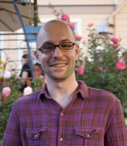
DHInvited speakersHeng Ji (UIUC), Eunsol Choi (NYU), Taylor Berg-Kirkpatrick (UCSD), Dawei Huang (SambaNova)
Casual lunch meetups at Caltech and UCLA where PhD students and postdocs present their research to a cross-disciplinary audience. Tap a talk to read the abstract and speaker bio.
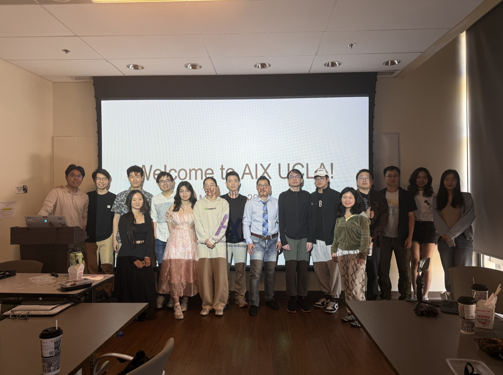
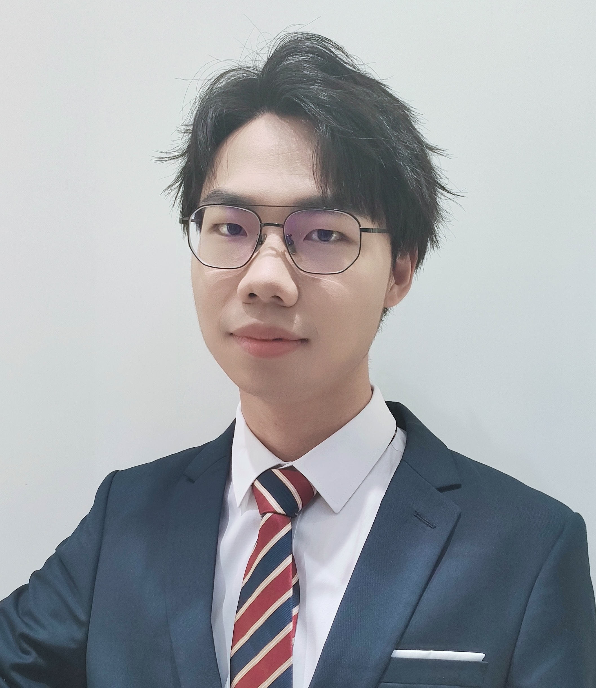
Zewei Zhou · UCLA
Cooperative automation offers a promising paradigm to mitigate the limitations of constrained observability in single-vehicle systems through information exchange. However, existing cooperative systems are limited in cooperative perception tasks with single-frame multi-agent fusion, leading to a constrained scenario understanding without temporal cues. This talk will explore how cooperative systems can achieve comprehensive spatio-temporal scene understanding and be jointly optimized across the full autonomy stack: perception, prediction, and planning. We will begin by introducing V2XPnP-Seq, the first real-world sequential dataset supporting all V2X collaboration modes, along with a comprehensive benchmark encompassing 11 distinct fusion methods. Next, the talk will present V2XPnP, a novel intermediate fusion end-to-end framework that operates within a single communication step. Compared with traditional multi-step strategies, this framework achieves a 12% improvement in perception and prediction accuracy while reducing communication overhead by 5×. Training such a complex multi-agent, multi-frame, and multi-task system poses significant challenges. To address these, we introduce TurboTrain, an efficient training paradigm that integrates spatio-temporal pretraining with balanced fine-tuning, achieving 2× faster convergence and improved performance while preserving deployable, task-agnostic spatio-temporal features. Finally, the talk will extend to the crucial task of planning. We introduce the vision-language-action (VLA) model, the emerging paradigm for end-to-end autonomous driving, to single-agent systems through AutoVLA, which integrates chain-of-thought reasoning and physical action tokenization to directly generate planning trajectories via a unified autoregressive process, dynamically switching between dual-thinking modes. We will conclude by discussing future research directions toward end-to-end cooperative automation systems with the VLA models.
Zewei Zhou is a Ph.D. candidate at the UCLA Mobility Lab. He received his master’s degree from Tongji University with the honor of Shanghai Outstanding Graduate. His research focuses on the scene understanding and reasoning of autonomous systems, which enables vehicles/robots to intelligently interact and cooperate with others. He received the Amazon AI PhD Fellowship 2025 and the Tier 1 Winner of the U.S. DOT Intersection Safety Challenge. His research has been published in top-tier venues such as NeurIPS, ICCV, and ICRA.

Jiachen Yao · Caltech
Inverse problems in scientific computing are foundational yet challenging due to high dimensionality, ill-posedness, and uncertainty. Traditional methods like optimization or MCMC often struggle with computational expense and robustness to noise. While generative models have emerged for solving PDEs, they often lack flexibility or stability. Incorporating additional bias or regularization is a powerful strategy for improving both the accuracy and stability of these models. First, we leverage the natural function-space structure of PDE solutions by introducing Function-space Diffusion Posterior Sampling (FunDPS), the first function-space diffusion framework for solving PDE inverse problems. By training unconditional denoisers on functions and applying guidance under theoretical guarantees, FunDPS achieves up to 32% accuracy gains and 25x computational efficiency over grid-based baselines. The architecture also unlocks powerful multi-resolution strategies for further speedups. In addition, we propose an equivariance regularization loss that leverages the inherent symmetries of a physical system. This method guides the diffusion model to generate solutions that more closely adhere to the target distribution, alleviating artifacts introduced by guidance. This regularizer shows consistent improvement on many inverse solvers. In summary, our work demonstrates that integrating specialized regularization is highly effective for generative models in scientific applications.
Jiachen Yao is a PhD student at Caltech in Computing + Mathematical Sciences advised by Anima Anandkumar. His research focuses on deep generative modeling and scientific problems, learning strong priors from data and physics to model complex systems.
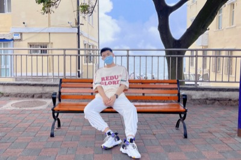
Defu Cao · USC
Recent advancements in foundation models have revolutionized natural language processing and computer vision, but their application to time series data has remained limited. This talk explores the emerging frontier of foundation models for temporal data, highlighting recent breakthroughs that promise to transform time series analysis and forecasting across diverse domains. We begin by examining TEMPO, a novel prompt-based generative pre-trained transformer for time series forecasting. Building on TEMPO's insights, we discuss the latest developments in transformer diffusion architectures like TimeDiT, which push the boundaries of performance in tasks such as imputation, forecasting, and anomaly detection. We explore how these models capture intricate temporal dependencies and generalize across diverse time series data, from weather patterns to financial markets. The talk will cover the challenges and opportunities in scaling these models to larger datasets and more complex temporal phenomena. We'll examine their potential impact on real-world applications in climate science, energy management, healthcare, and finance. Finally, we'll look ahead to future research directions, including multimodal integration and interpretability, that could further expand the capabilities of time series foundation models.
Defu Cao is a Ph.D. student in the Thomas Lord Department of Computer Science at the University of Southern California, working with Prof. Yan Liu at the USC Melady Lab. He is also working with Prof. Angela Zhou from USC Marshall Data Sciences and Operations. Prior, he earned his Master’s Degree at the School of EECS Peking University, where he was co-advised by Prof. Xu Cheng and Prof. Xianhua Liu. Cao’s research primarily focuses on developing advanced machine learning and data mining algorithms for structured data, with a particular emphasis on time series foundation models. His work aims to create models that demonstrate a deep understanding of temporal patterns and dynamics in various domains, including spatio-temporal and relational data. To this end, his research aims to integrate causal inference, graph neural networks, spectral domain representation, interpretability, and robustness. In addition, he is also interested in causal representation learning and pre-training large language models. He has published his research in top conference proceedings including NeurIPS, CVPR, ICLR, ICRA, ICDM, and NAACL.
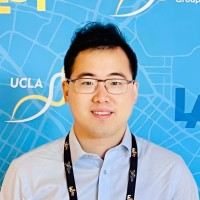
Shun Ye · UCLA
Translating research into real-world solutions has been the core theme of my work at the intersection of biomedical engineering, microfluidics, AI, and point-of-care diagnostics. In this talk, I will share my journey developing automated biomedical devices, from lab prototypes to market-oriented technologies. I will also provide an overview of common fundraising pathways for academic entrepreneurs, including angel investors, friends and family rounds, venture capital, and strategic collaborations with industry partners. To ground the discussion, I will present my latest startup effort: developing a Miniature AI Robot Scientist, designed to automate the full experimental workflow on a single benchtop. This compact, intelligent system aims to streamline R&D processes for small labs and early-stage biotech teams. Finally, I will reflect on the unique advantages and inherent challenges of launching a startup from an academic setting—balancing innovation, resource constraints, and the steep learning curve of entrepreneurship.
Shun Ye is the Founder of eBot Bio, which aims to cut R&D costs by 95%. He is also a PhD Candidate in the Bioengineering and Electrical Engineering departments and California NanoSystems Institute (CNSI) at UCLA. Before joining UCLA, he earned a Master's degree in Biomedical Engineering from Penn State University and completed a research fellowship in Analytical Microfluidics at the Chinese Academy of Sciences. Shun has six years of experience in biomedical instrumentation, automation, and AI. He has eight journal publications and four issued patents. He developed the OsciDrop technology, which was featured as a cover article in Analytical Chemistry and has been commercialized as the world's first all-in-one, automatic, chip-free digital PCR machine (D600, Maccura Biotech Co., Ltd.), with six fluorescent channels, and has received $20M in Venture Capital. He is currently co-supervised by pioneering medical device scholars Prof. Dino Di Carlo and Aydogan Ozcan. His doctoral research focuses on developing and translating novel biomedical devices and micro/nanotechnologies for AI-powered lab automation, point-of-care diagnostics, and other industry and clinical applications.
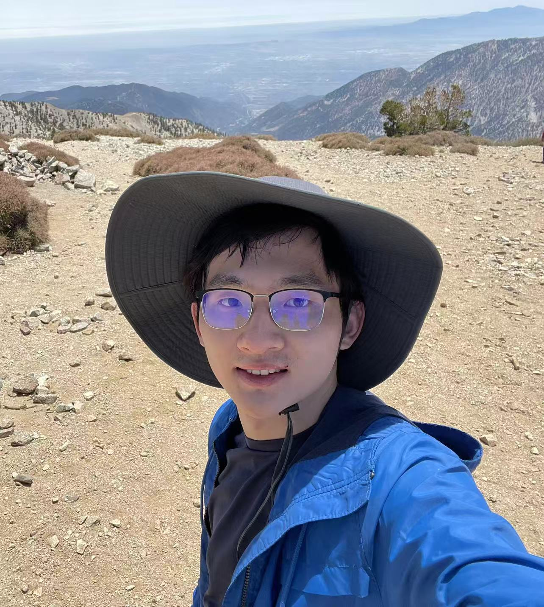
Yaozhong Shi · Caltech
This talk begins by demonstrating how traditional generative models, specifically diffusion and flow-matching methods, can be lifted from finite-dimensional settings to infinite-dimensional function spaces. Building on flow matching formulated in Hilbert space, it then shows how Gaussian process regression can be generalised to full stochastic-process regression. The talk concludes with an overview of the latest neural-operator architectures designed for efficient learning on irregular grids. Relevant papers are Stochastic Process Learning via Operator Flow Matching and Mesh-Informed Neural Operator : A Transformer Generative Approach.
Yaozhong Shi is a PhD student at Mechanical Engineering (ME) in Caltech.

Zhiyu Huang · UCLA
This talk presents a series of learning-based frameworks for interactive and scalable decision-making in autonomous driving. We begin with Differentiable Integrated Prediction and Planning (DIPP), which couples prediction and planning in a differentiable architecture to enable planning-aware predictions. Building upon this, GameFormer introduces a level-k game-theoretic modeling approach using Transformers to capture mutual interactions among agents. DTPP (Differentiable Conditional Prediction and Cost Evaluation for Tree Policy Planning) leverages a structured tree-based planner with jointly learnable prediction and cost modules, allowing more efficient and human-aligned decisions. Finally, GenDrive applies diffusion models for generative driving policy learning, further enhancing flexibility and robustness. These frameworks demonstrate how principled integration of deep learning, game theory, and generative modeling can advance decision-making capabilities in complex autonomous driving environments.
Dr. Zhiyu Huang is currently a Postdoctoral Scholar at the UCLA Mobility Lab. He received his Ph.D. from Nanyang Technological University (NTU), working in the AutoMan Research Lab. His previous experience includes a research internship at NVIDIA Research and a visiting researcher position at UC Berkeley Mechanical Systems Control Lab. His research focuses on bridging robotics, AI, and autonomous mobility, with interests in deep learning, reinforcement learning, generative models, and vision-language models. He has authored 30+ papers in top-tier venues and received the IEEE ITS Best Dissertation Award Finalist and NTU MAE Best PhD Thesis Award.

Zida Wu · UCLA
This talk introduces the foundations of game theory and recent advances in solving Nash Equilibria (NE) using reinforcement learning (RL). We discuss how game types extend from two-player to mean field games (MFGs), where solving NE via traditional PDE/HJB approaches becomes intractable. To address this, we present an RL-based framework that minimizes exploitability—a measure of deviation from true NE. We review key methods, including fictitious play and online mirror descent, and conclude with our recent work on a master policy for MFGs that adapts to varying initial distributions and common noise.
Zida Wu is a Ph.D. candidate in Electrical and Computer Engineering at UCLA. His research lies at the intersection of robotics, machine learning, and game theory, with a focus on developing scalable and robust solutions for complex multi-agent systems. His previous work spans estimation, planning, localization, and control. He is deeply passionate about bringing advanced techniques into real-world robotic applications!
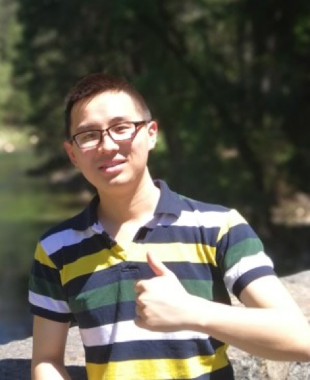
Zhaoliang Zheng · UCLA
In recent years, we have witnessed the rapid advancement of autonomous driving. The development has progressed from modular systems to end-to-end autonomous driving architectures. With the rise of Transformers and large language models, the field is now entering a new phase where world models are playing increasingly important roles. This shift is driven by several factors. For instance, long-tail scenarios and complex urban intersections pose significant challenges due to high traffic density, intricate layouts, and diverse agent behaviors. Intersections, in particular, are critical components of mobility systems—they are central to both traffic modeling and decision-making processes. Beyond technical complexity, intersections also raise major safety concerns. These environments are safety-critical, involving not only vehicles but also pedestrians and vulnerable road users such as cyclists, motorcyclists, and scooter riders. Ensuring both stability and safety in such multifaceted scenarios is paramount. Our goal, therefore, is to provide additional perception redundancies and enhance scenario understanding, enabling autonomous systems to perform more reliably in these challenging conditions.
Please check out his personal website for more info: Zhaoliang Zheng

Lizhi Yang · Caltech
This talk introduces the development of robot learning for locomotion. It is a brief survey of the continual research thread in the community spanning both model-based and model-free methods. Common tools are also introduced.
Lizhi Yang is a Ph.D. Candidate in MCE at Caltech. His research lies in robot learning and robot safety. His previous works spans reinforcement learning for robot locomotion and safety-critical control. He is passionate about bringing humanoid robots into the wild.
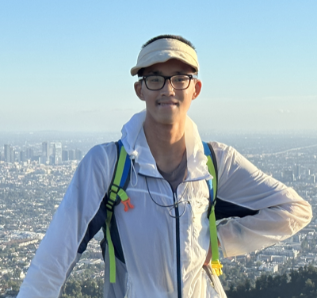
Chuwei Wang · Caltech
Accurately predicting the long-term behavior of chaotic systems is crucial for various applications such as climate modeling. However, achieving such predictions typically requires iterative computations over a dense spatiotemporal grid to account for the unstable nature of chaotic systems, which is expensive and impractical in many real-world situations. An alternative approach to such a full-resolved simulation is using a coarse grid and then correcting its errors through a closure model, which approximates the overall information from fine scales not captured in the coarse-grid simulation. Recently, ML approaches have been used for closure modeling, but they typically require a large number of training samples from expensive fully-resolved simulations (FRS). In this work, we prove an even more fundamental limitation, i.e., the standard approach to learning closure models suffers from a large approximation error for generic problems, no matter how large the model is, and it stems from the non-uniqueness of the mapping. We propose an alternative end-to-end learning approach using a physics-informed neural operator (PINO) that overcomes this limitation by not using a closure model or a coarse-grid solver. We first train the PINO model on data from a coarse-grid solver and then fine-tune it with (a small amount of) FRS and physics-based losses on a fine grid. The discretization-free nature of neural operators means that they do not suffer from the restriction of a coarse grid that closure models face, and they can provably approximate the long-term statistics of chaotic systems. In our experiments, our PINO model achieves a 330x speedup compared to FRS with a relative error ~10%. In contrast, the closure model coupled with a coarse-grid solver is 60x slower than PINO while having a much higher error ~186% when the closure model is trained on the same FRS dataset.
Chuwei Wang is a PhD student at CMS dept in Caltech.
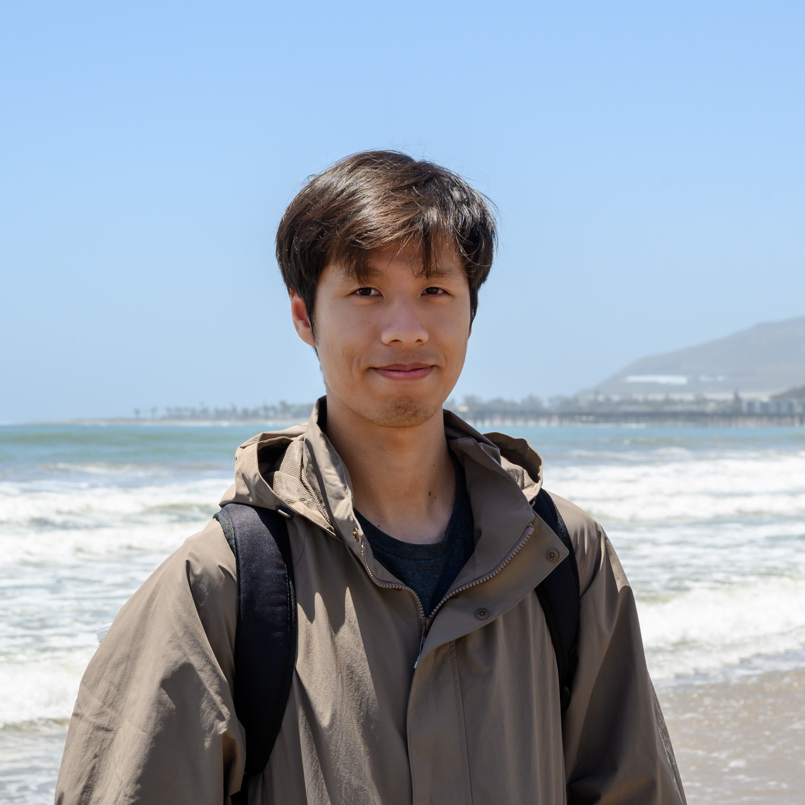
Hongkai Zheng · Caltech
Inverse problems are fundamental in many domains of science and engineering, where the goal is to infer the unknown source from indirect and noisy observations. These problems are challenging due to their ill-posedness, complexity in the underlying physics, and unknown measurement noise. This talk introduces a general family of probabilistic methods—Plug-and-Play Diffusion Prior (PnPDP) methods—that leverages both data-driven diffusion priors and knowledge of the underlying physics to solve ill-posed inverse problems. We introduce InverseBench, a benchmarking framework designed to evaluate PnPDP approaches in a systematic and easily extensible manner. We discuss experimental observations based on InverseBench, sharing insights into the efficacy and limitations of different PnPDP methods.
Hongkai Zheng is a PhD candidate at Caltech in Computing + Mathematical Sciences advised by Yisong Yue. His research interests lie in the realm of deep generative modeling and inverse problems. He develops scalable and efficient generative models and designs algorithms to solve ill-posed problems in a probabilistic framework.

Sijie Ji · Caltech
The integration of Artificial Intelligence (AI) into healthcare has become a transformative force, reshaping the way medical services are delivered and experienced. A particularly exciting frontier in this domain is the concept of ubiquitous computing, which refers to the seamless integration of advanced computational technologies into everyday environments. By blending the power of AI with the pervasive presence of computing devices, ubiquitous computing offers unprecedented opportunities for making healthcare more accessible, efficient, and personalized.
Dr. Sijie Ji is a Schmidt Science Fellow working at the Division of Engineering and Applied Science, California Institute of Technology, with a joint position at UCLA. She obtained her Ph.D. from Nanyang Technological University, Singapore. Sijie’s research interests span the broad area of sensing, deep learning, ubiquitous computing and their applications in digital healthcare systems, cyber-physical systems (CPS), and next-generation AIoT systems. She was an organizer and PC member for multiple conferences such as SenSys, MobiSys, BuildSys, MobiCom, ICDCS, VTC etc. She is a recipient of N2Women Young Research Fellowship. She was named CPS Rising Star, Singapore 100 Women in Tech.
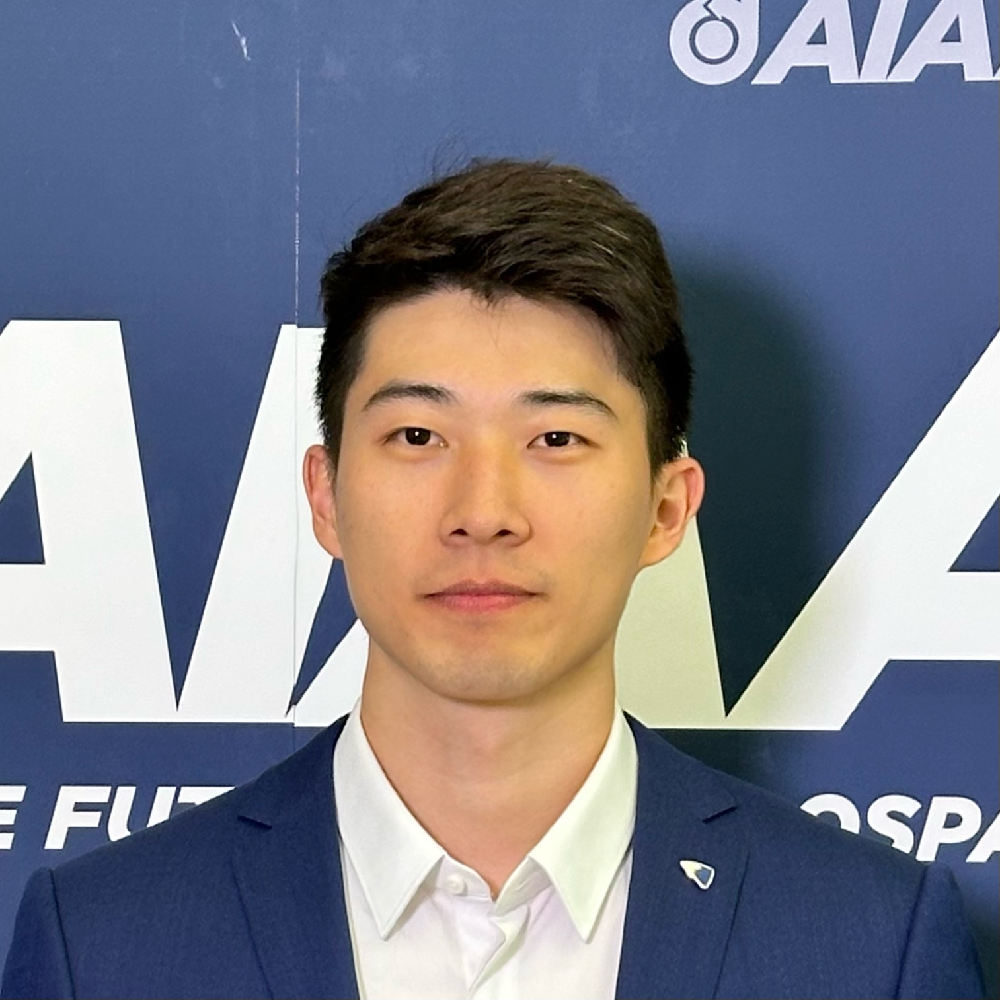
Sze Chai (Mickey) Leung · Caltech
Optimal sensor placement (OSP) is critical for efficient, accurate monitoring, control, and inference in complex real-world systems. We propose a machine learning-based feature attribution framework to identify OSP for target predictions. Feature attribution quantifies input contributions to a model’s output and shows promise for OSP. Thus, we develop an attribution-based framework for identifying optimal sensor locations and compared its performance with other existing methods. (Relevant document: Integrated Gradients for Optimal Surface Pressure Sensor Placement for Lift Prediction of an Airfoil Subject to Gust.) Subgrid-scale (SGS) models enable large-eddy simulations to perform fluid-dynamic simulations with low computational costs by resolving only the large scales and modeling the SGS effects. We develop a novel sparse nonlinear model for predicting both the SGS stress and the numerical errors produced during the simulations which are often neglected in the other models. Our model shows promising a-posteriori test results, as evidenced by the stabilization of the simulation. (Relevant document: Consistent data-driven subgrid-scale model development for large-eddy simulation.)
Sze Chai (Mickey) Leung is a PhD Student at Mechanical and Civil Engineering (MCE) in Caltech.
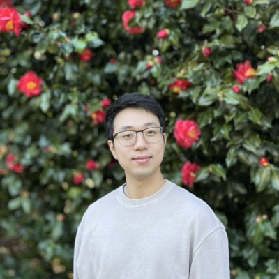
Haowen Zhou · Caltech
Over the past century, microscopy has evolved significantly through advances in hardware design. However, pushing the boundaries of imaging performance using purely optical and mechanical innovations has become increasingly challenging. Meanwhile, the rapid growth in computational power has transformed the way we process and analyze imaging data, enabling a paradigm shift in microscopy. By offloading complexity from hardware to algorithms, computational microscopy—a rising interdisciplinary field—offers a powerful approach to simplify system design, correct aberrations, and extract more information from data. In this talk, I will explore how computational techniques can enhance modern imaging systems, with case studies in biological and pathological applications that highlight the potential of this synergistic approach.
Haowen Zhou is a Ph.D. candidate at Department of Electrical Engineering in California Institute of Technology, advised by professor Changhuei Yang. His research focuses on computational microscopy for 2D and 3D imaging, with broad applications in biological and clinical sciences. Haowen received his B.S. degree in Optical Engineering from Huazhong University of Science and Technology, China in 2019, an M.S. degree in Electro-Optics from University of Dayton in 2021, and an M.S. degree in Electrical Engineering from California Institute of Technology in 2024. He is a Gupta Sensing to Intelligence fellow, a 2024 SPIE Optics and Photonics Education Fellow, and a Schmidt Graduate Research Fellow.
Jiachen Yao · Caltech
As machine learning shows its capabilities in scientific research, grounding models in physics is essential for achieving robustness and reliable generalization. This talk explores the integration of fundamental physical principles into machine learning frameworks. Physics-Informed Neural Networks (PINNs) embed partial differential equations (PDEs) directly into the neural network's loss function. While promising, PINNs present significant training challenges, particularly in balancing the different loss components, which can prevent convergence. There are novel methods designed to address these challenges. We introduce MultiAdam, a dynamic loss reweighting algorithm that balances different loss terms based on easy-to-access metrics, and CondPINN, a technique that improves the error landscape for more stable convergence by preconditioning. Furthermore, we present PINNacle, a comprehensive benchmark consisting of the evaluation of various PINN methods across a range of physical problems. We hope the research in physics-inspired machine learning can pave the way for AI models capable of simulating diverse physical phenomena, generating novel designs, and advancing scientific discovery.
Jiachen Yao is a PhD student at Caltech in Computing + Mathematical Sciences advised by Anima Anandkumar. His research focuses on deep generative modeling and scientific problems, learning strong priors from data and physics to model complex systems.
14 speakers from Caltech, UCLA and USC, spanning generative models, robotics, autonomous driving, scientific ML and healthcare.
Jiachen Yao
PhD Student
Caltech
Defu Cao
PhD Student
USC
Shun Ye
PhD Candidate
UCLA
Yaozhong Shi
Postdoctoral Scholar
Caltech
Zhiyu Huang
Assistant Professor
NC State University
Zida Wu
PhD Candidate
UCLA
Zhaoliang Zheng
PhD Candidate
UCLA
Lizhi Yang
PhD Candidate
Caltech
Chuwei Wang
PhD Student
Caltech
Hongkai Zheng
PhD Candidate
Caltech
Sijie Ji
Schmidt Science Fellow
Caltech
Sze Chai (Mickey) Leung
PhD Student
Caltech
Haowen Zhou
Postdoctoral Scholar
Stanford University
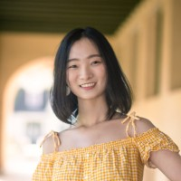
Founder & Lead Organizer, AIX
Jiajing Mao is the founder and lead organizer of AIX and a Research Scientist at Kylin AI. She holds a PhD in Physics from Caltech. She started AIX in 2024 to bring academic researchers and industry practitioners together through workshops, dinners and research meetups.
Organizing a workshop, interested in speaking at a meetup, or looking to connect with researchers? We'd love to hear from you. Feel free to forward this to anyone who might be interested.
Contact Jiajing Mao